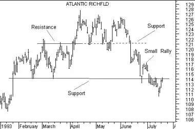

Point And Figure
OverviewPoint & Figure ("P&F") charts differ from traditional price charts in that they completely disregard the passage of time and only display changes in prices. Rather than having price on the y-axis and time on the x-axis, P&F charts display price changes on both axes. This is similar toKagi, Renko, and Three Line Break charts.
Interpretation Point & Figure charts display the underlying supply and demand of prices. A column of Xs shows that demand is exceeding supply (a rally); a column of Os shows that supply is exceeding demand (a decline); and a series of short columns shows that supply and demand are relatively equal.There are several chart patterns that regularly appear in P&F charts. These include Double Tops and Bottoms, Bullish and Bearish Signal formations, Bullish and Bearish Symmetrical Triangles, Triple Tops and Bottoms, etc. It is beyond the scope of this book to fully explain all of these patterns.
ExampleThe following two charts both show the prices of Atlantic Richfield. The first chart displays prices in P&F, the second chart displays prices as high, low, close bars.
As I mentioned above, P&F charts focus only on price action. Looking at this P&F chart, you can see that prices were initially contained between a support level at 114 and a resistance level at 121. When prices broke above the resistance level at 121 (the long column of Xs), that level became the new support level. This new support level eventually failed (the long column of Os), prices re-tested the support at 114, made a small rally, and then fell below the 114 support level.

This next chart shows the same pricing information as the preceding P&F chart. You can see that the support and resistance levels are also identifiable in this bar chart, but the P&F chart made it much easier to identify them.

CalculationPoint & Figure charts display an "X" when prices rise by the "box size" (a value you specify) and display an "O" when prices fall by the box size. Note that no Xs or Os are drawn if prices rise or fall by an amount that is less than the box size.
Each column can contain either Xs or Os, but never both. In order to change columns (e.g., from an X column to an O column), prices must reverse by the "reversal amount" (another value you specify) multiplied by the box size. For example, if the box size is three points and the reversal amount is two boxes, then prices must reverse direction six points (three multiplied by two) in order to change columns. If you are in a column of Xs, the price must fall six points to change to a column of Os. If you are in a column of Os, the price must rise six points to change to a column of Xs.
The changing of columns identifies a change in the trend of prices. When a new column of Xs appears, it shows that prices are rallying higher. When a new column of Os appears, it shows that prices are moving lower.
Because prices must reverse direction by the reversal amount, the minimum number of Xs or Os that can appear in a column is equal to the "reversal amount."
The common practice is to use the high and low prices (not just the close) to decide if prices have changed enough to display a new box.